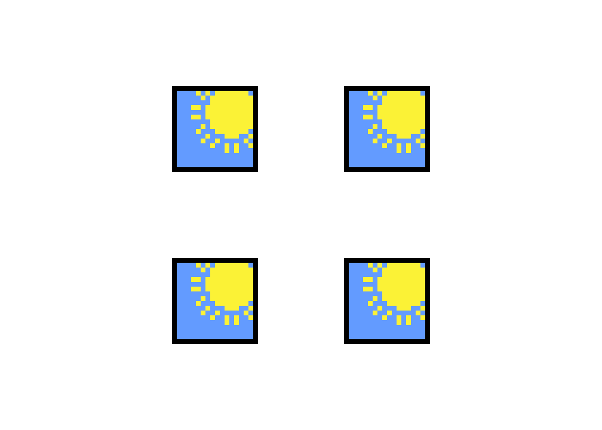

Crash post on Modal Logic
There are many ways to modify "\(P\) is true".
For example, we can say:
- "\(P\) is necessarily true."
- I believe "\(P\) is true."
- "\(P\) is eventually true."
I'll give a very brief introduction on how we can model these statements in Modal Logic.
What is necessity?
It is not necessarily sunny in the whole year.
There are days which are cloudy, rainy or snowy.
In summer, it is necessarily sunny.

That is, somethis is necessary if it is true in all possible situations.
(The word 'all' is doing a lot of work here.)
What is belief?
Suppose it is cloudy, but I think it is raining or snowing.
Maybe some family member is showering but I did not notice; or a neighbor is washing something outside.
Either way, we can picture this situation like this:
I believe something is true if it is true in all situations I consider possible.
What is eventually?
Today is Friday, and cloudy; tomorrow will be Saturday and raining; the next day will be Sunday and sunny.
That is, it will eventually be sunny.
Something is eventually true if it is true in some future situation.
Kripke models
Put all possible situations in a collection \(W\).
Each situation \(w\) in \(W\) has a collection of alternative situations.
This collection of situations along with their relation is a Kripke model.
As described above:
- \(\Box P\) is true at \(w\) if \(P\) is true in all situations alternative to \(w\).
- \(\Diamond P\) is true at \(w\) if \(P\) is true in some situation alternative to \(w\).
Now, "\(P\) is necessary" and "I believe \(P\) is true" can be written as \(\Box P\); "\(P\) is eventually true" can be written as \(\Diamond\). The meaning of these sentences depend on the possible situations and the relation between them.
Some comments
- Here is a short article introduction to Modal Logic. Here is a book introduction to Modal Logic. Here is a book introduction to Modal Logic, for people who already know some logic.
- I described Kripke models in this post. There are other ways of defining meaning for Modal Logic. All have vantages and disvantages.
- Different types of necessity have different models. For example, when modelling belief, a situation may not be an alternative to itself. If we are modelling knowledge, a situation must be an alternative to itself.
- I only described the meaning of Modal Logic. Modal logics are logics, they have axioms and rules. Different models have different logics, and vice-versa.
- We may also combine \(\Box\)s and \(\Diamond\)s in the same statement. For example, \(\Box\Box P\) is a valid statement. What sense this makes depends on context.
- I also did not specify which logic I added \(\Box\) and \(\Diamond\) to. This logic could be propositional logic, or first-order logic, or any other logic you want. Even other modal logics; in this case we would have multiple \(\Box\)s and \(\Diamond\)s.